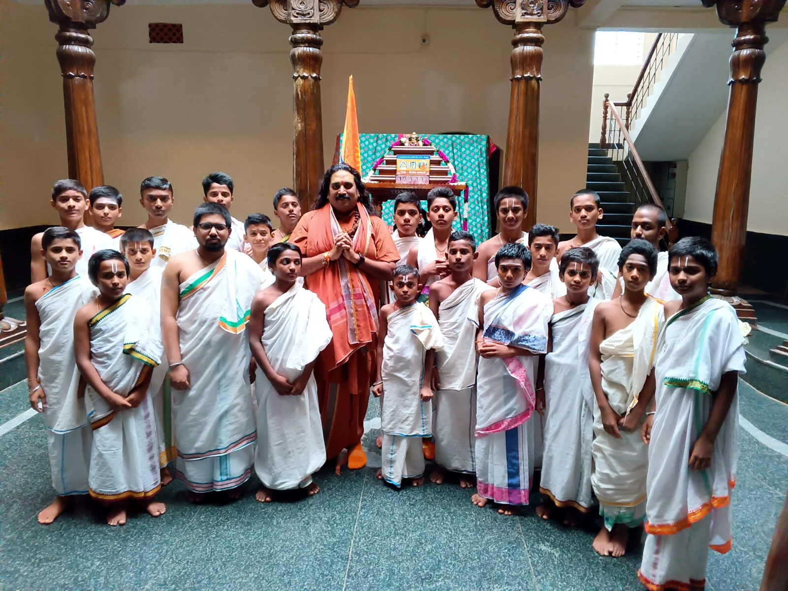

Gau Sevaगौ सेवा
Daily fodder, clean water, shelter, grooming, and loving care for cows and calves.
Shree Surbhi Kripa Pariwar · Gurugram, Haryana
Serving Mother Cow. Protecting Sanatana Dharma. Empowering society.
A vibrant family of devotees who lovingly serve Mother Cow, keep our sacred traditions alive, and serve society — with each step of service.

 Service that comes from the heart.
Service that comes from the heart.
Upcoming Event
श्रीमद् भागवत कथा
Eight days of katha, bhakti and satsang with Gopremi Acharya Manish Hari Ji. Come with your family and friends for devotion, reflection and community.
You and your family are warmly invited.
Event helpline 99113 47071
 View full poster
12–19 December 2026
View full poster
12–19 December 2026
Our Mission
Gau Seva is the highest service.
Shree Surbhi Kripa Pariwar is a family of devotees united by a simple belief: when we serve Gau Mata, we serve the Divine, our culture, and our shared future. Every handful of fodder, every act of care, and every gathering of satsang is an offering of love.
We are not here to build an institution. We are here to build a pariwar — a family where everyone can belong, everyone can contribute, and everyone can grow.
Our Seva
Everything we do flows from a single source: the wish to serve. These are the four ways that wish takes shape.


Daily fodder, clean water, shelter, grooming, and loving care for cows and calves.
Havans, satsangs, katha, festivals, and sanskar that keep our sacred traditions alive.
Community meals, cleanliness drives, youth engagement, and neighbourly support.
Wellness guidance and care initiatives inspired by Ayurveda and the spirit of Kamdhenu Arogya Sansthan.
Seva in Action
No filter can improve the quiet dignity of a cow being fed, a calf being held, or a community coming together. These are real moments from our seva.
More Ways We Serve
Three quiet commitments that grow out of the same devotion.
A daily fire of prayer, offered with clean ingredients and full attention.
Photo: Sush Motwani · CC BY-SA 4.0
Peepal, Neem and Bargad saplings, less single-use plastic, cleaner surroundings.
Dignity and support for people living with disability, and clothes and food for those in need.

The Guide
Gopremi Acharya Manish Hari Ji is a spiritual guide and Gau Sevak whose life revolves around the care of Gau Mata. Through daily Gau Seva, satsang, havans, and community initiatives in and around Gurugram, he inspires a growing pariwar of devotees to live the values of compassion, seva, and Sanatan Sanskriti.
Under his guidance, the Pariwar has become a meeting point for devotees, young seekers, and community members who wish to serve — not just with resources, but with their time, attention, and hearts.
गाय हमारी संस्कृति,
सनातन हमारे प्राण।
“The cow is our culture; Sanatan is our life-breath.”
Gopremi Acharya Manish Hari Ji
In the Press
Acharya Ji's words on Gau Seva, Sanatan Sanskriti, and Indian tradition have been featured in Hindi dailies across Haryana and Delhi.
गाय हमारी संस्कृति, सनातन हमारे प्राण।
Hindi daily · Haryana
धर्म, अर्थ, काम व मोक्ष का द्वार है गौमाता।
Hindi daily · Delhi
गोसेवा राष्ट्र सेवा का सर्वश्रेष्ठ माध्यम।
Hindi daily · Haryana
Headlines reproduced from published coverage. Publication names and dates to be added after verification.
Support Gau Seva
Every day, Gau Mata depends on us for food, water, medicine, and love. Your contribution — however small — becomes fodder, care, and dignity for a life that gives so much to us.
Moments
Darshan, seva, satsang, and the quiet in-between moments that make up our days.



Come, Sit With Us
आपका स्वागत है
Whether you want to visit the gaushala, join a satsang, offer seva, or simply know more — you are welcome.